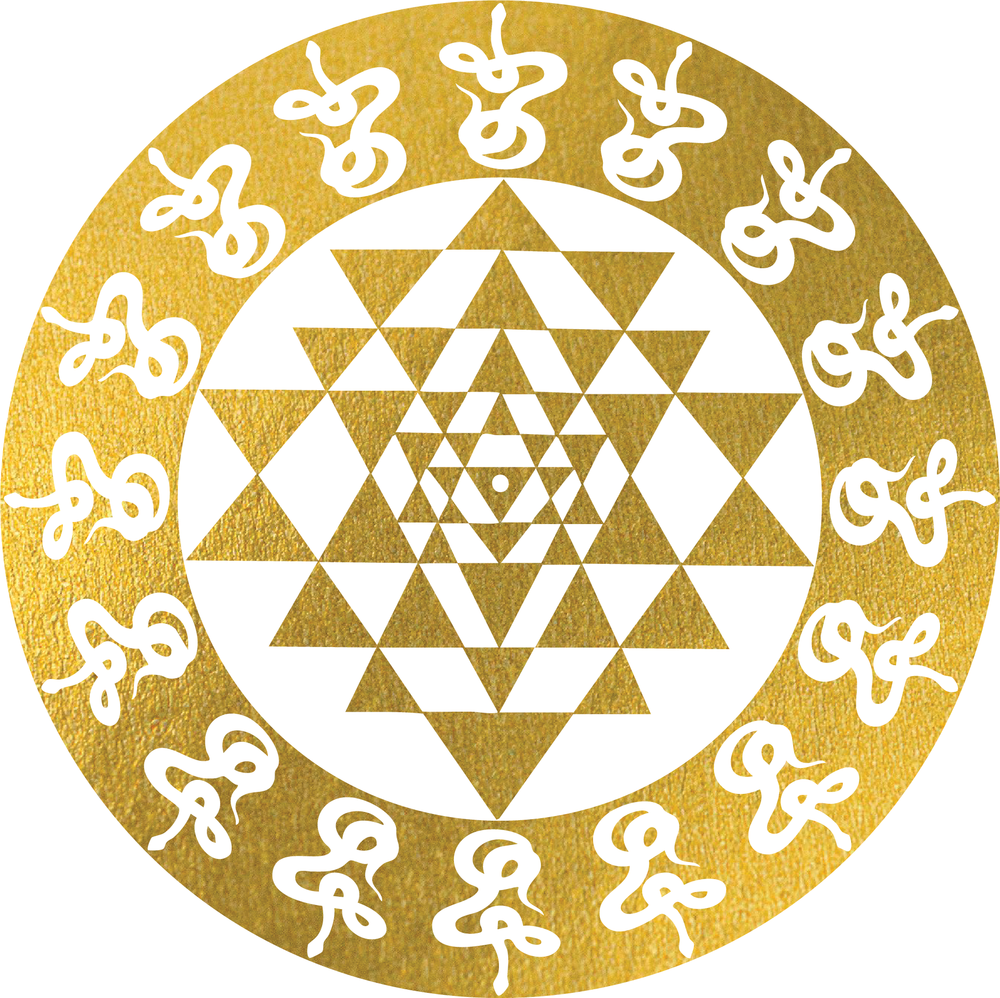
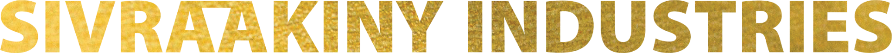

Sivraakiny Industries
Sivraakiny Industries is an Indian defence manufacturing company committed to building advanced indigenous capabilities in support of India's defence requirements.
Given the sensitive nature of defence manufacturing, information regarding our manufacturing capabilities and operations is intentionally limited on this website, in keeping with applicable Government of India security and confidentiality requirements.
